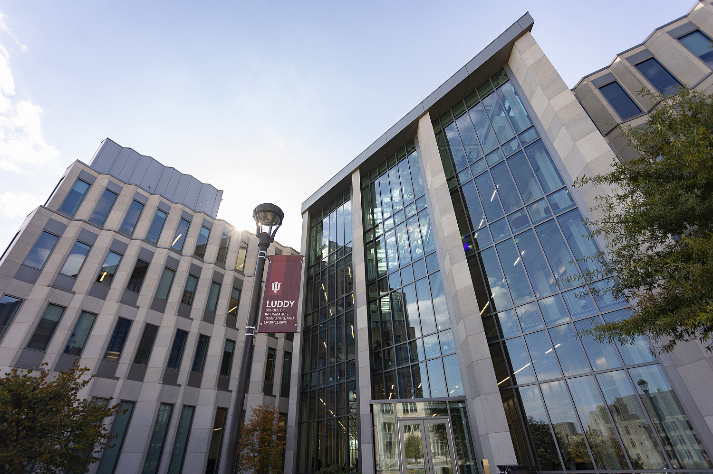
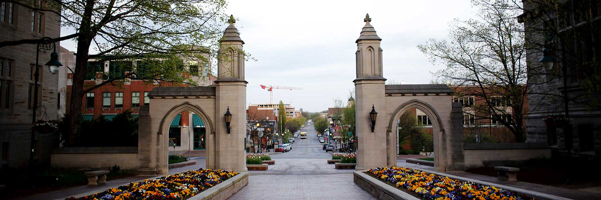
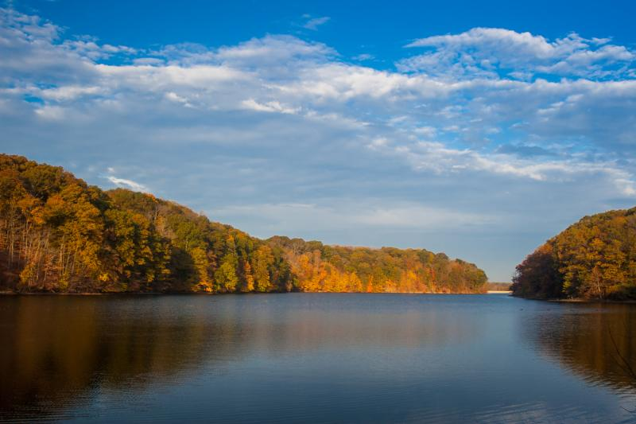

AI for security
Using language models, agents, and learning systems to discover vulnerabilities, analyze malware, fuzz complex software, and help defenders adapt.
Fall 2027 PhD opportunities · Indiana University Bloomington
I am building a research group where curious people work together on problems at the intersection of AI and security. I am recruiting funded PhD students to join the group in Fall 2027, with support through research assistantships (RA) or teaching assistantships (TA).
If you are motivated by real-world impact, enjoy learning new things, and want to grow into an independent researcher, I would be glad to hear from you.

Using language models, agents, and learning systems to discover vulnerabilities, analyze malware, fuzz complex software, and help defenders adapt.
Understanding prompt injection, poisoning, adversarial behavior, and the new attack surfaces created when AI is embedded in real software systems.
Measuring deployment gaps, distribution shift, hidden failure modes, and the difference between strong benchmark results and dependable real-world performance.
Designing systems that know when to stop, when to adapt, and how to improve without wasting computation or becoming brittle under changing conditions.
Browse my publications to learn more about my recent work.
I grew up in Turkey, and I am talkative by nature. I like getting to know the people I work with, thinking aloud together, and making research feel like a shared intellectual adventure rather than a sequence of assignments. I love mentoring and helping students find questions they genuinely want to pursue.
Spontaneous conversations, coffee breaks, and an unplanned whiteboard session can move a project forward in ways a scheduled meeting cannot. For that reason, I expect students to spend regular time on campus and be part of the group in person. This is not about counting hours; good ideas often come from being around each other.
My goal is to foster curiosity and passion, offer frequent and honest feedback, and gradually help you take real ownership of your projects. I will bring ideas, structure, and support, but over time, I want you to become the person setting the direction.
I have mentored more than twenty undergraduate interns and junior researchers from around the world, many of whom went on to excellent PhD programs and research careers. Their growth means a great deal to me. If you are seriously considering working with me, feel free to send any of them a short, respectful note and ask about their experience.
Strong technical foundations and experience in AI or security are helpful, but I care just as much about how you learn, how you respond when things do not work, and whether you care deeply about the problems you take on.
People from all backgrounds and identities are welcome in my group, and I want everyone to feel respected, supported, and able to do their best work here.
A PhD is several years of your life. The intellectual environment matters, and so does the place you call home while you are doing the work.
IU Bloomington offers the energy and resources of a major research university within a close-knit campus. At Luddy, you will find seminars, colloquia, student organizations, a dedicated makerspace, and researchers spanning computing, informatics, engineering, and adjacent fields. It is a strong setting for work that crosses traditional boundaries.
Bloomington is an quintessential college town with music, arts, international food, local coffee shops, farmers' markets, and an active community beyond campus. It is also easy to get outside: city parks, trails, forests, and Griffy Lake are nearby. This is a welcoming and globally connected community, with dedicated support for international students and scholars.


Learn more about the Luddy student experience and explore what Bloomington has to offer.
A thoughtful email is much more useful than a long one. Please keep it short, specific, and your own.
Use this exact subject line:
Fall 2027 PhD Applicant - [Your Name]
Emailing me does not replace applying to the Computer Science PhD program. Please review Luddy's official requirements and application instructions carefully. IU currently lists December 15 as the Fall 2027 PhD application deadline.
Requirements and deadlines are set by IU and may change. Check the official admissions page for the latest information.